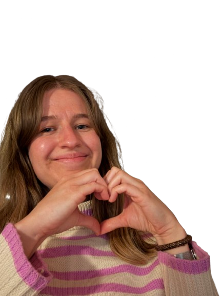

I didn't feel like making a facebook event so here you have some information related to my birthday celebration.
I cannot wait to see you all and to party together ❤️
Last updated 14/4/2026. Added something about dresscode.
my sister Lise is on an internship in YFU Paraguay atm :(
The venue is the YFU House with the adress Stationsvej 4, 5690 Tommerup St. If you are arriving by car, there are a few dedicated parking spots on the side that is facing the train startion.
If you are arriving by public transportion, the easiest way is with DSB by taking a train to Tommerup St. which is right next to the house. You can find routes within Denmark on Rejseplanen. If you want the cheapest tickets, the DSB option of Orange/Orange Fri is the cheapest within Denmark and is only valid for that specific train.
The party officially starts Saturday April 18th at 14:00 where there will be some birthday cake and socializing. We will then have some dinner in the evening, where I would like to to arrive 18:00 at the latest in order to plan. Sunday morning I will also serve some breakfast.
I have the house the entire weekend starting Friday the 17th ~16:00. You are very welcome to arrive whenever it is most convenient with your travels. You'd just have to take care of your own food until Saturday afternoon, but there's supermarkets in the town.
Please let me know approx. when you will be arriving. If I hear nothing, I will assume it's just Saturday at 14.
The YFU house is equipped with sleeping quarters that have bunk beds. You should just bring:
If you can't bring your own linen and towel, just let me know and I can borrow some in the house.
In the afternoon where we will have cake and mingle, you can dress relaxed. In the evening I'd been happy if we dress up a little more nicely. I'll be wearing a nice pantsuit with some pearls and black shoes, so think: shirt, jakcet, dresses, stuff like that 👑
We have my lovely friend Christian volunteering to cook for us. We will be having a delicious vegetarian menu. I hope some of you will volunteer to help me with the dishes between courses. We have an industrial dishwasher and it's quick, when we help each other.
IMPORTANT: If you have any allergies and are unsure, whether we already spoke about this, do reach out to me!
I will provide us with some drinks (wine, beer, non-alcoholic). After those have been drunk, I will kindly ask you to pay for the drinks you consume for the rest of the evening. The prices will be ✨very competitive✨ and I will make sure you can pay easily in both EUR and DKK.
My dear friend Amanda has agreed to be the toastmaster. So if you have a song, toast, or anything else in mind – please coordinate it with her.
She can he reached via email or on +47 944 65 412 via WhatsApp or Signal.
I have started a playlist. And even though I have exquisite taste – yes, I do! – I would love for you to contribute with some cool party music. You add your own songs via this Spotify link.
I have been asked to provide some wishes, so here are some:
The biggest gift you can give me though – is your presense! Some of you are making quite the journey and it's already making me super happy, that you are coming. You can also help me tremendously by helping here and there througout the weekend and contribute to cleaning up Sunday after breakfast.
